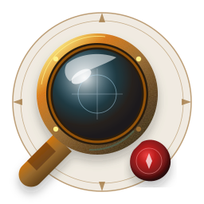
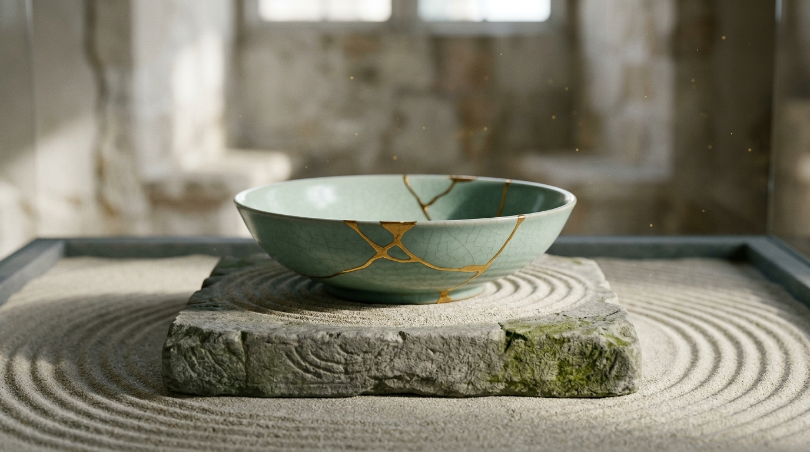
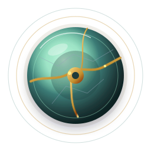

主题 01 · 高逻辑反思
雾都回响 · 推理案卷室
S3 温润羊皮暖砂 · 蔡司显微透镜拆解词根与法庭矛盾指控。
Lingua-Flow 将官方考纲（CEFR / JLPT / HSK 3.0）与认知心理学（FSRS-5 记忆稳定性模型）解耦注入三个统一的主题工作台：推理案卷室、声景画廊与榫卯试炼场。

S3 温润羊皮暖砂 · 蔡司显微透镜拆解词根与法庭矛盾指控。


S2 暖素白 / 暗房，X 轴滑轨调频音调。


S4 北欧雾灰 · 极坐标法轮与扇形手牌。